Originally published in Mada Masr on 14 September 2016
By Ismail Fayed
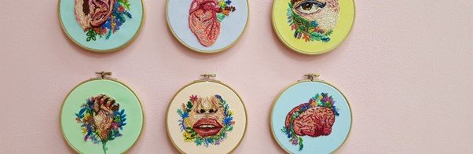
Roznama 5 exhibition view showing diverse works by young Egyptian artists
The question of doing "political work" is at the heart of most contemporary art making in Egypt. It seems a fundamental expectation of contemporary artistic practice, and artists who do not orient their practice toward some political position risk being marginalized by many figures in a wider community of curators, cultural operators and funders.
This oppressive mechanism has arisen for two reasons, in my opinion: US and western European grant-making institutions assuming a broad role in supporting the arts in Egypt since the mid-1990s, and a global move to consider art a dumping ground for everything the state should be dealing with and is not (mental health, education, political mobilization). Art has become the domain where ideas on how to imagine future political projects should happen. I believe this displaced expectation has transformed many artistic practices, all over the world, into performances of affected ideologies.
Contemporary art in Egypt is no exception, and plenty of art projects here regurgitate political gestures devoid not only of substance but also of any formal concerns. But if aesthetic objects and processes are communicated through a medium, even if that medium is the very air around us, close attention to formalist and technical concerns are necessary. Indeed, the tensions between an idea, the possibilities and limitations of a medium, and the artist's own limitations are what makes a work of art interesting.
This year's edition of Medrar for Contemporary Art's annual group exhibition and competition, Roznama 5, curated by Mohamed Allam and Ghita Skali over three venues (Medrar, SOMA Art School and Gallery and Mashrabia Gallery), might be the first collective exhibition since the revolution to unabashedly make use of political critique by a younger generation politicized beyond the point of self-consciousness or forcedness. Around a quarter of the works on display are infused with politics.
For example, Ahmed Sorour's Stopper (which jointly won, with Malak Yacout's artwork in the form of a mathematical research project, a solo show at Medrar and a cash prize from a group of older artists) is a small 3D-printed grey sculptural object which looks like a dog's muzzle. It meditates from atop a glass-covered plinth in Medrar's space on power, control and censorship.
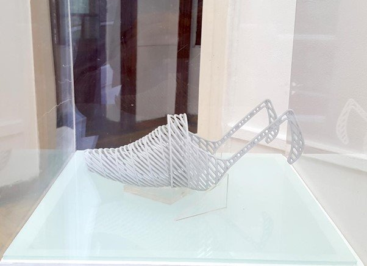
Ahmed Sorour, Stopper, 3D-printed sculpture resembling a dog's muzzle
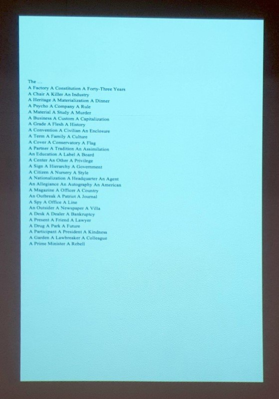
Marwa Benhalim, The Constitution, 27-minute video projection
These themes are also echoed in Imane Ibrahim's Book of Riddles (winner of a cash prize from Mashrabia Gallery), which directly tackles current political realities. It's a small booklet that tries to trick the reader into constructing a narrative of imprisonment through a solving a riddle. It is a not unfamiliar exercise reflecting the ways in which we are implicated in sanctioning state violence against others, but for me it its over-reliance on a concept and textual trickery limited its power.
It resonates with Marwa Benhalim's nearby work, The Constitution, a projected 27-minute video in which apparently randomly grouped lists of items to do with militants' occupation of a plot of nationalized land in Libya once owned by the artist's grandfather, a factory owner, are typed out. The result is a bit obscure, but points at the layers of power residing in basic terms or words.
Sorour's object works well with Ibrahim's and Benhalim's works together prompting thoughts on how power delimits and controls. In the same vein, Tawfig's six simply drawn animated GIFs on light boxes, Middle Class Fear (winner of a cash prize from Al-Ismaelia for Real-Estate Development, also shown at Medrar), echo these politically engaged works by absurdly parodying obscure clichés.
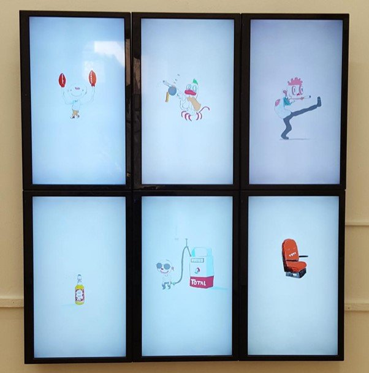
Tawfig, Middle Class Fear, animated GIFs on light boxes
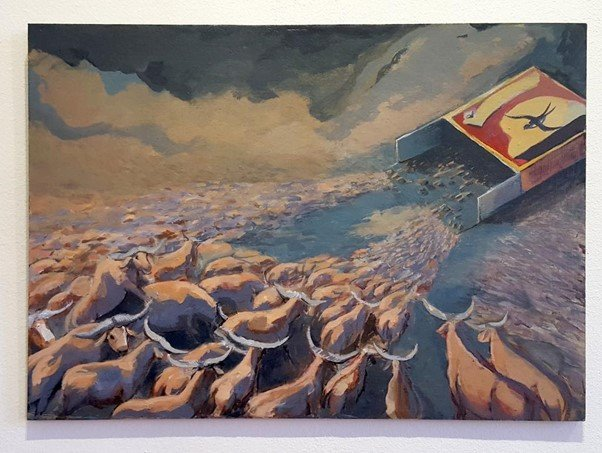
Ahmed Mohsen, The Production of Human Cattle, three large paintings
Mona Essam's Meditation (the winner of a coupon from Alwan Stationary, exhibited at SOMA) consists of monochrome collages of women cleaning in domestic scenes. They have a distinctly retro look, reminiscent of 1970s American feminist art like Martha Rosler's, and I found it rather problematic that everyone in them looks white.
More overtly political is Ahmed Mohsen's The Production of Human Cattle, three large paintings at SOMA, which has the most direct and basic symbolism (a stampede of cattle, a pig watching TV). Amany Nabil's Game Attacks (at Mashrabia) is a collage reminiscent of early internet art that overlays statues of prominent Egyptian figures over computer game backgrounds.
In contrast, Nourhan Maayouf's My Bathroom (winner of the Contemporary Image Collective's prize and on display at Mashrabia) is a work of boundless visual richness. No space is more intimate than one's bathroom — and it's a space still highly contentious in a country where personal spaces are mediated through layers of coded social control. Yet Maayouf's work immediately goes beyond these visual and conceptual confines through carefully revealing the many aspects that constitute and define a bathroom that are not specifically personal or subjective (building materials, plumbing, toiletries).
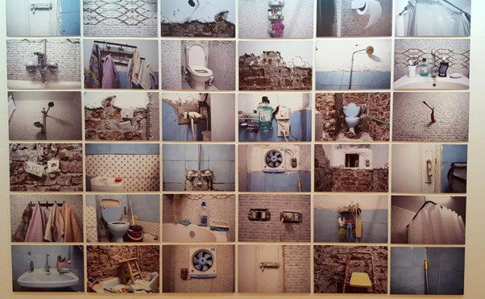
Nourhan Maayouf, My Bathroom, exploring intimate domestic space
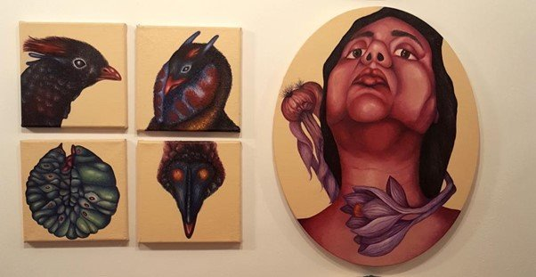
Marwa Abdel Moneim, Multiple Angles, botanical-style portraits
And for a second year, Marwa Abdel Moniem presents a captivating series of paintings, just as cryptic as her winning series from last year, Successive. Multiple Angles is made up of a single portrait of a woman along with portraits of different life forms. In my eyes Abdel Moniem's unique visual language — contrasted, smooth brushstrokes creating the volumetric forms of anatomical illustrations, meticulously executed like old botany books — makes her the most interesting painter among the young generation, along with Rania Fouad (who was part of the exhibition A Season in Hell at Gypsum Gallery last year).
Other stand-out works include Zeina Medwar's Testimony (at Medrar), a cryptic play on what qualifies as witness or testimony. In six photos, an amorphous piece of black fabric is placed in different public and private contexts to suggest a ghostly presence haunting specific places, perhaps testifying to something that cannot be erased or forgotten.
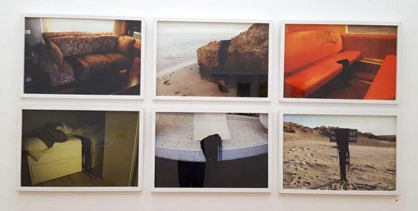
Zeina Medwar, Testimony, black fabric placed in various contexts
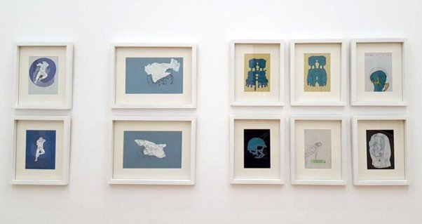
Mustafa El Husseiny, Old Blue Dot, monochrome paintings of conflict
This sense is reflected in Mustafa El Husseiny's Old Blue Dot, 10 small, almost monochrome graphic paintings of elements of conflict and strife (two people fighting, someone wearing a gas mask). It too seems to speak of indelible memory traces.
Amira El Badry's Supernova (at SOMA) is a photographic series making linear and spatial connections between objects around us (buttons, sewing thread) and stars in space. I also found Salma Elashry's cynical triptych of untitled oil paintings of toilets, shatafas and colorful insect diagrams, placed nearby, visually distinct and funny.
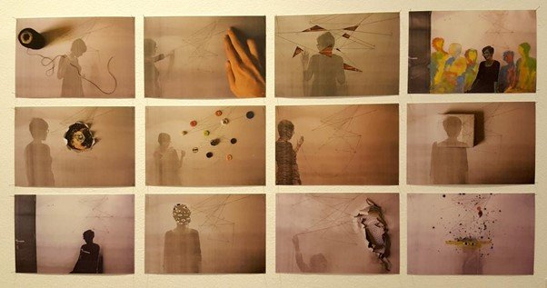
Amira El Badry, Supernova, connecting earthly objects to cosmic space
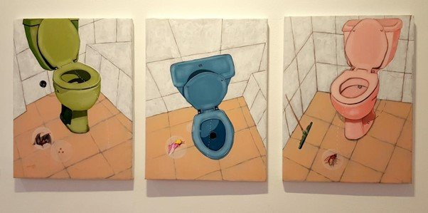
Salma Elashry, untitled triptych of toilets and insect diagrams
Roznama 5 comes during a severe political crisis in which Egypt is witnessing one of the worst crackdowns on organized dissent in memory. What is possible in a context where the slightest misstep could lead to years in jail with no trial? The fact that these institutions and artists found the time and money, largely out of their own pockets (with support from the Peacock Foundation for Arts, which appears to be a new initiative, and the Turkey's Yunus Emre Institute) to produce work cannot be taken lightly.
The everyday reality cannot be divorced from these artists' artistic interests or processes, yet the fact that many chose to outright center their work around it is risky on an artistic level. Some artists navigate that fraught decision by working with humor and sarcasm (Mona Essam, Amira Elashry) or a meditative subtly (Marwa Abdel Moniem, Mariam Satour's beautiful embroideries of body parts — see image at top). I believe such works, which may be political but allow themselves to be mediated by non-political ideas and concerns, are more interesting and enduring than those that are very direct or simple. The unbearable political reality should not stop us from being critical and pointing out there's nothing radical in a political engagement that puts symbolic gestures of allegiance or relevance above any artistic concerns. Politics informs art, Roznama 5 proves, but should not dictate it.
On a practical level, I spent more than four hours just trying to move from one venue to the other — reminding me of the absolute necessity of decentralizing contemporary artistic practices from their central Cairo ghetto context. There are also no maps or catalogues, only a giant poster with thumbnails of the artworks and names of the artists, which makes navigation inside the spaces a challenge. Some works had artists' notes next to them, and others not — although for me key terms or hints in written form generally help grasp artistic intention — and I was surprised to find mistakes in every artist's note.
Medrar displays the greatest number of prize winners (five) as well as the most political works. The works at SOMA, a space with a more bourgeois feel, as it's housed in an upmarket Zamalek apartment building and is a private alternative to non-profit initiatives, are more cryptic. SOMA has fewer works on display, giving them a chance to inhabit the space and the viewer to take them all in. It's also noteworthy that this year's Roznama has far fewer video works than usual.
Of the 37 participating artists (who are all under 30), 22 are women. Sadly I would argue that this ratio is not due to feminist activism, but to the strict gender divide in society that means women take up more "feminine" interests and men take more "masculine" interests. This dynamic is reflected in contemporary art, where outside the government scene many art initiatives have either been spearheaded by women or populated by more women artists than men — not because society believes in women's artistic merits, but because art is seen as a practice befitting women, outside the purview of a patriarchal structure of state institutions. For once, patriarchy works in our favor.